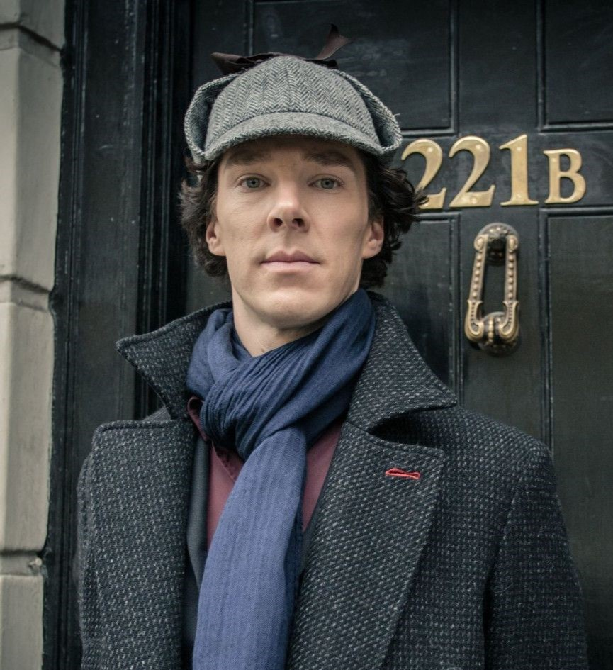
Sherlock Holmes
Protagonista absoluto
Un detective consultor brillante y excéntrico, famoso por su mente deductiva única y su capacidad para resolver los casos más complejos.
La serie Sherlock producida por la BBC debutó en 2010 y revolucionó la forma de contar historias clásicas. Su propuesta fue traer al detective creado por Arthur Conan Doyle al siglo XXI, con celulares, GPS y recursos tecnológicos que lo acercan al público moderno. Protagonizada por Benedict Cumberbatch como Sherlock Holmes y Martin Freeman como John Watson, se transformó en un fenómeno global.
En la primera temporada, el espectador conoce la dinámica entre Holmes y Watson. El episodio inicial, A Study in Pink, presenta un Londres contemporáneo donde la lógica deductiva de Sherlock se combina con su carácter arrogante y brillante. Este comienzo consolidó la relación con Watson, quien aporta humanidad y equilibrio frente al intelecto extremo del detective.
La segunda temporada intensifica los conflictos y eleva el nivel de tensión narrativa. A Scandal in Belgravia introduce a Irene Adler, personaje clave que desafía emocionalmente a Sherlock y lo obliga a enfrentar sentimientos que suelen quedar fuera de su lógica deductiva. Más tarde, The Hounds of Baskerville y The Reichenbach Fall culminan con la aparente muerte de Sherlock, un giro que impactó al público.
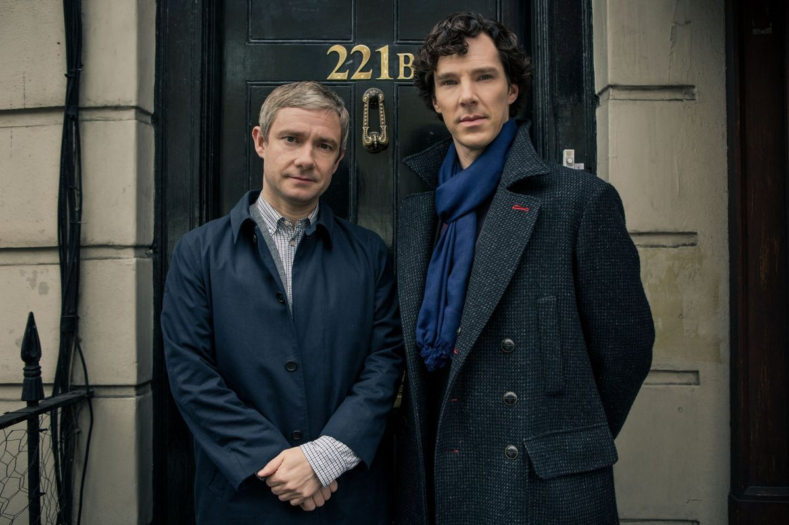
La tercera temporada sorprende con el regreso del detective tras fingir su muerte, un suceso que impacta tanto a Watson como al público. La boda de Watson y los secretos de Mary Morstan enriquecen la trama, aportando nuevas tensiones y cambiando la dinámica central.
En la cuarta temporada, la historia se oscurece con la aparición de Eurus Holmes, la hermana secreta de Sherlock. Esto lleva al detective a enfrentar sus propios miedos y debilidades, ofreciendo una visión más psicológica y profunda. El legado de Sherlock es innegable: demostró cómo los clásicos pueden reinventarse con ingenio y una gran química entre sus protagonistas.
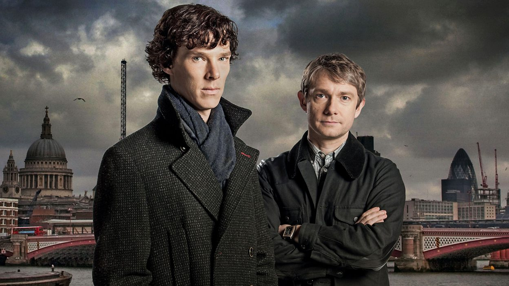
Sherlock y Watson se conocen en un Londres moderno lleno de intrigas y misterios. Juntos resuelven sus primeros casos, con A Study in Pink como episodio central, que marca el inicio de una sociedad única.
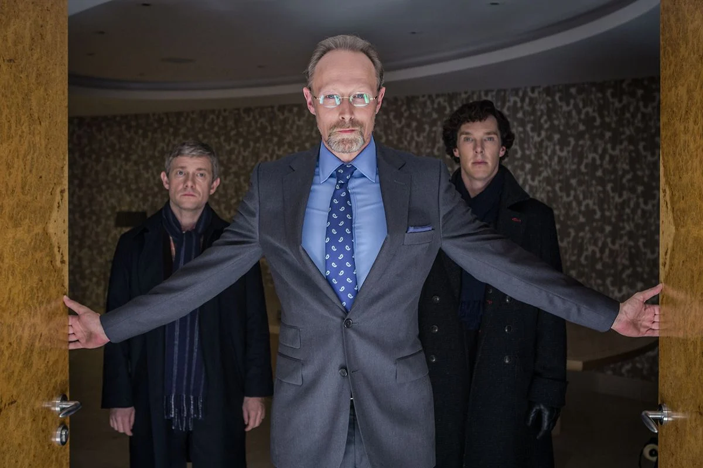
Sherlock regresa tras fingir su muerte; la boda de Watson y los secretos de Mary Morstan transforman la dinámica del dúo con giros, humor y tensión emocional.
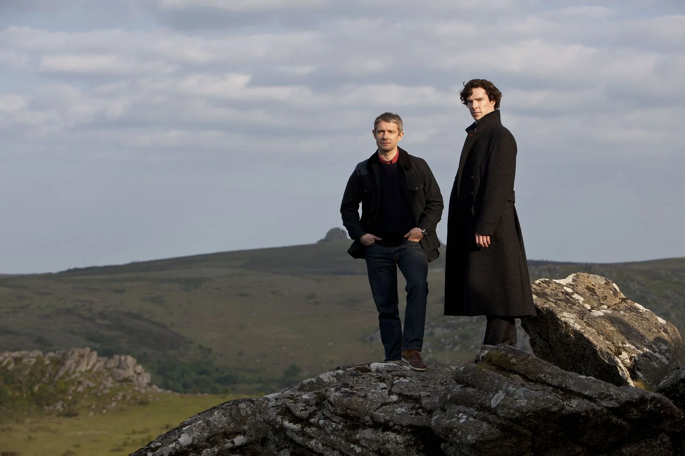
Irene Adler desafía a Sherlock en Belgravia; la tensión aumenta con The Hounds of Baskerville y culmina en The Reichenbach Fall, con un giro impactante.
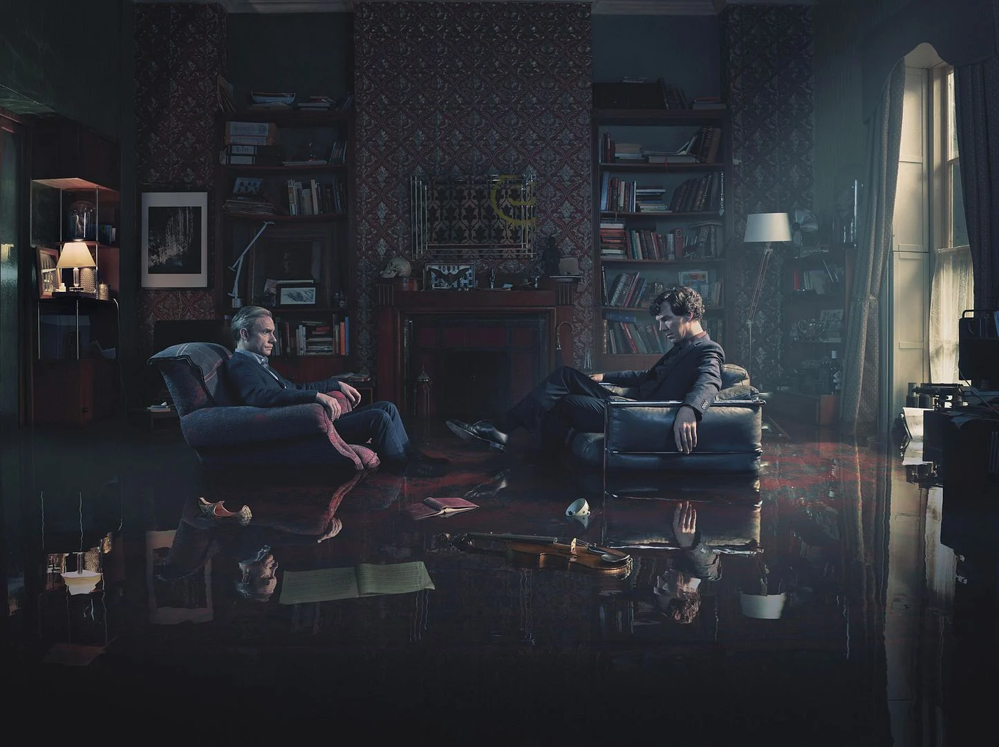
Eurus Holmes irrumpe en la vida del detective. Sherlock enfrenta miedos y recuerdos en una temporada más oscura y psicológica, mostrando su lado más humano.

Protagonista absoluto
Un detective consultor brillante y excéntrico, famoso por su mente deductiva única y su capacidad para resolver los casos más complejos.
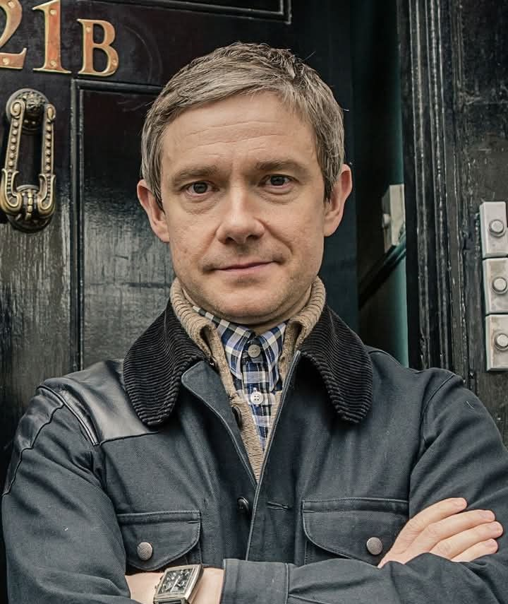
Compañero inseparable
Su carácter empático y práctico contrasta con la lógica extrema de Holmes, aportando humanidad a la narrativa.
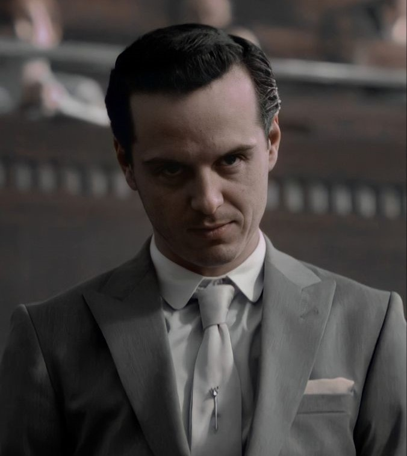
Principal villano
Un genio criminal obsesionado con Sherlock, capaz de manipular personas y sistemas enteros con su mente retorcida.
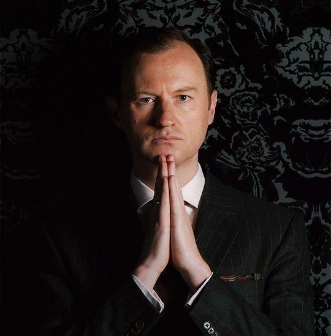
Hermano mayor de Sherlock
Inteligente, calculador y con gran influencia política, mantiene una relación compleja con Sherlock.
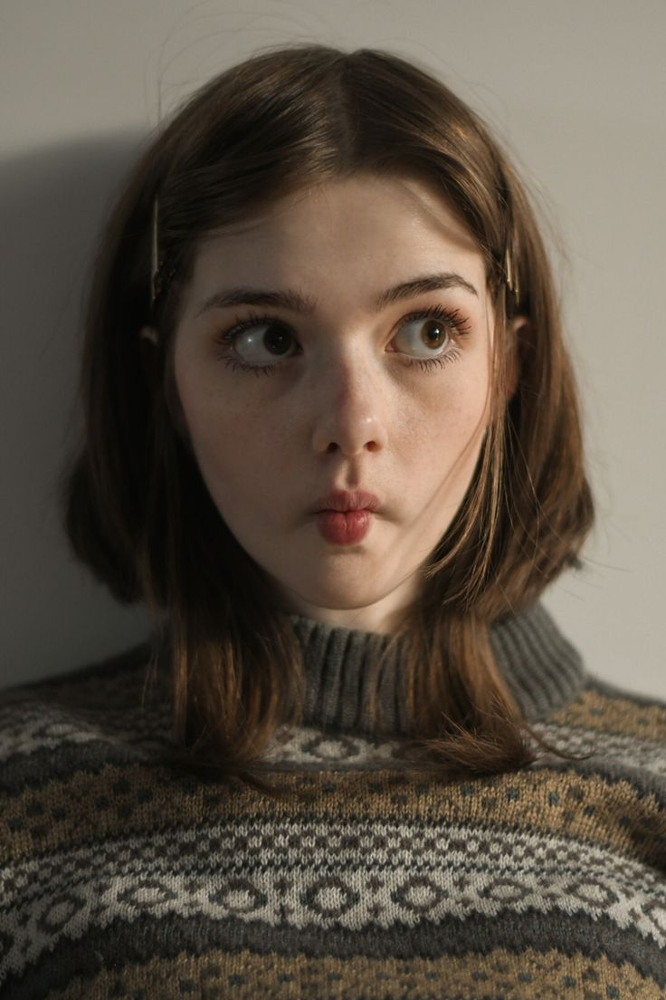
"La segunda temporada es brillante, especialmente el duelo entre Sherlock y Moriarty. Una de las mejores adaptaciones que vi."
"La química entre Sherlock y Watson es increíble. Cada capítulo me atrapó de principio a fin."
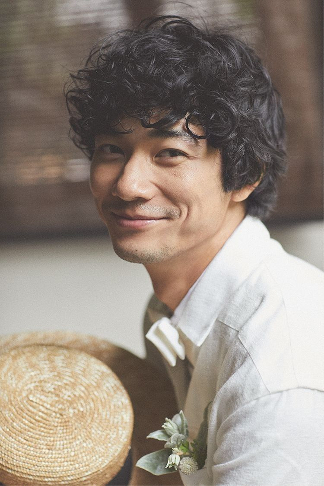
"La serie supo modernizar a Sherlock sin perder la esencia original. Visualmente impecable y con guiones memorables."
"La cuarta temporada me pareció más oscura, pero me gustó cómo cerraron la historia. Personajes muy bien construidos."